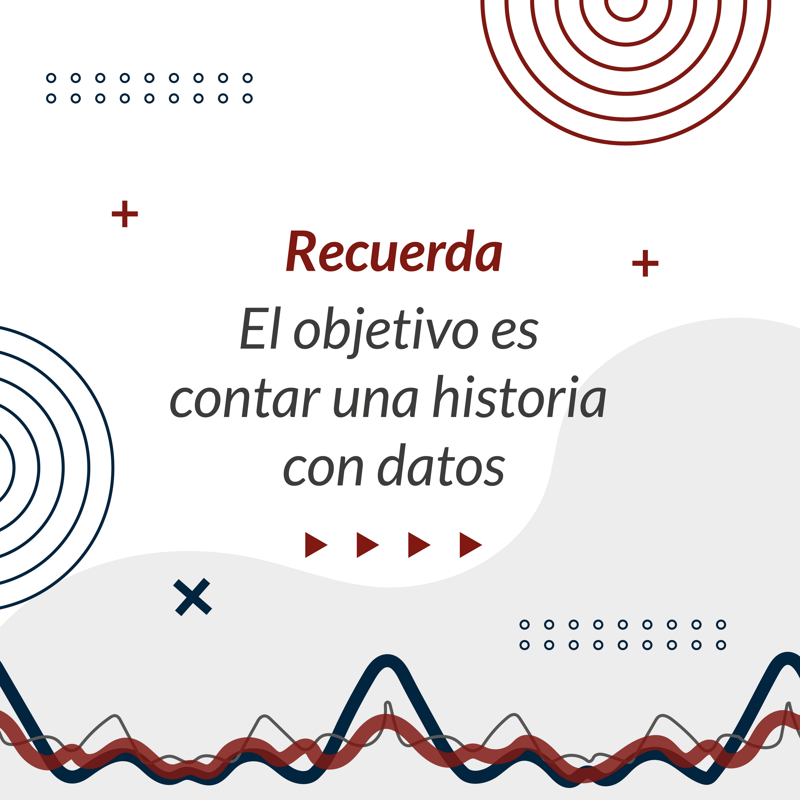
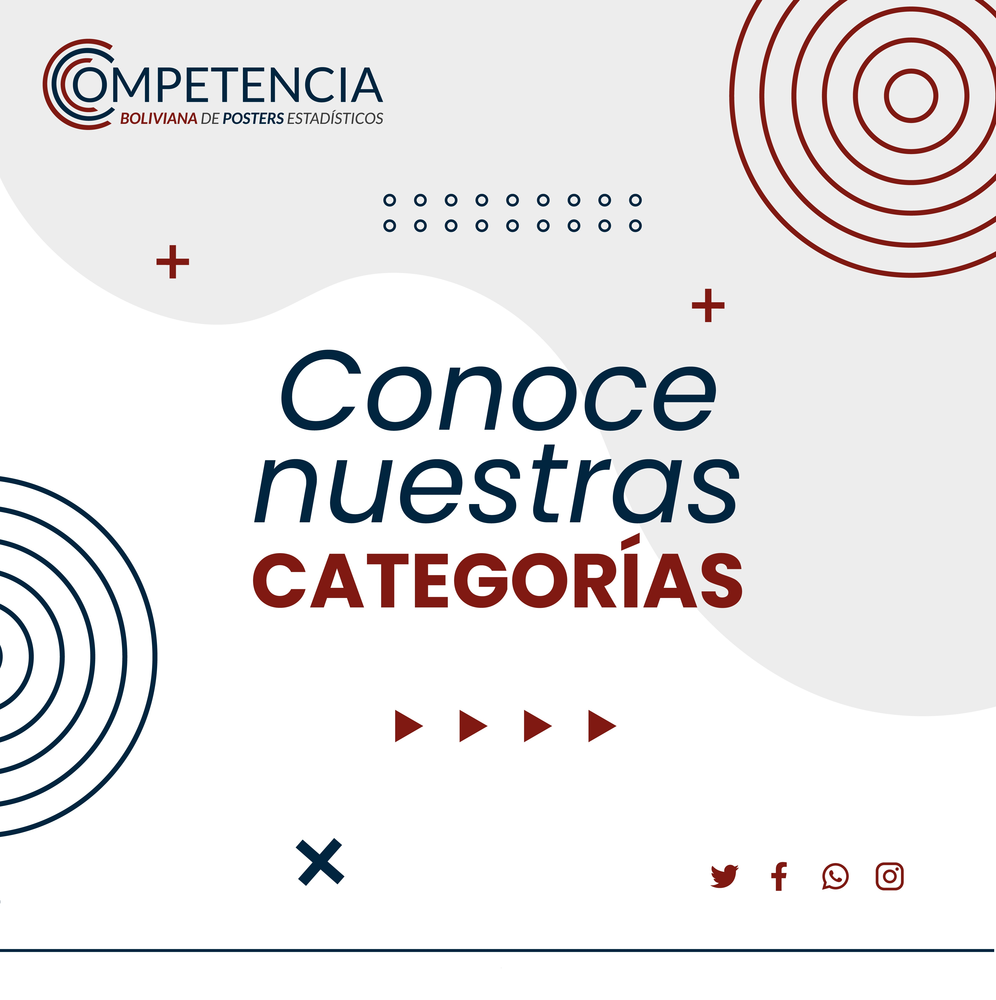

Aprende estadística explorando tu realidad. Forma tu equipo escolar o universitario y representa a Bolivia en el concurso internacional ISLP.
★ QUINTA VERSIÓN · INSCRIPCIONES ABIERTAS 2026-2027
Tus datos cuentan una historia.
Haz que Bolivia y el mundo la escuchen.
La investigación estadística no se queda en el aula. Forma tu equipo de 2 a 5 estudiantes más un docente tutor, investiga un problema real de tu comunidad y compite por representar a Bolivia en la Conferencia Mundial del International Statistical Institute (ISI).
La estadística no es solo calcular números: es la lente con la que descubrimos patrones ocultos en nuestra realidad y aprendemos a contar historias que transforman nuestro país.

🧭 ¿Cuál es tu Categoría?
Ingresa el año de nacimiento de los estudiantes para identificar al instante los requisitos y el nivel de profundidad requerido por el jurado.
🎨 Las 4 Categorías: De lo Lúdico a lo Científico
La competencia crece contigo. El jurado evalúa cada categoría según la madurez metodológica de su grupo etario:
🎈 Categoría Laplace
Primaria · 9 a 11 años
Enfoque: Curiosidad visual y exploración cotidiana.
Gráficos recomendados: Pictogramas, conteos de frecuencias, barras simples y tablas sencillas.
Tono del jurado: Valora el entusiasmo, preguntas de su entorno escolar y conclusiones lógicas.
🌿 Categoría Bernoulli
Secundaria Menor · 12 a 15 años
Enfoque: Hábitos colectivos, redes sociales, medioambiente y deportes.
Gráficos recomendados: Histogramas, gráficos de líneas temporales, sectores y porcentajes comparativos.
Tono del jurado: Valora recolección propia de datos, diseño equilibrado y claridad expositiva.
📊 Categoría Poisson
Secundaria Mayor · 16 a 18 años
Enfoque: Problemáticas socioeconómicas locales, salud pública y coyuntura nacional.
Gráficos recomendados: Diagramas de dispersión, correlaciones bivariadas, diagramas de caja (boxplots).
Tono del jurado: Rigor en fuentes secundarias (INE, BM), muestreo explícito y pensamiento crítico.
🏛️ Categoría Gauss
Universidad (Pregrado) · Sin límite de edad (Estudiantes matriculados en carreras de pregrado)
Enfoque: Investigación científica aplicada y ciencia de datos.
Gráficos recomendados: Modelos de regresión, series temporales, intervalos de confianza al 95%.
Tono del jurado: Publicación formal, discusión de limitaciones estadísticas y ética de datos.
🚀 La Ruta del Póster en 4 Pasos
Participar es 100% gratuito para unidades educativas fiscales, privadas y universidades de los 9 departamentos:
1. Forma tu Equipo
Reúne de 2 a 5 estudiantes del mismo rango etario e invita a un profesor o docente tutor a guiarlos.
2. Encuentra una Pregunta
Formula una hipótesis sobre tu colegio o país: uso del agua, hábitos digitales, nutrición o transporte.
3. Analiza y Diseña en A1
Recolecta tus datos o usa fuentes oficiales abiertas. Diseña en Canva o PowerPoint con tamaño A1 legible a 2 metros.
4. Envía y Compite
Completa el formulario en línea y envía el PDF por correo a islp.bolivia@gmail.com antes del cierre de marzo de 2027.
🏆 Casos de Estudio y Ganadores Históricos
Inspírate con los proyectos bolivianos que triunfaron en el certamen nacional y representaron al país en el Congreso Mundial de Estadística:

1º Lugar Nacional · 4ª Edición
Categoría Laplace (Primaria) · Cochabamba
“Pequeños datos para cuidar grandes caudales.”
Gotas que Cuentan: Hábitos de Consumo de Agua en Nuestra Escuela
Sede: (Cochabamba)
¿Por qué destacó el jurado este trabajo?
Excelente narrativa cronológica y pictogramas sencillos explicados por niños de 10 años con total fluidez.
Reconocimientos al talento, la rigurosidad científica y la creatividad gráfica:
🥇 Fase Nacional (Bolivia)
1.er Lugar por Categoría: Trofeo oficial, diplomas de honor y Pack Educativo I.
2.do y 3.er Lugar: Diplomas de honor al mérito para estudiantes y tutor, y Packs Educativos II y III.
Certificación Universal: Certificado digital de participación emitido por el Comité Nacional e ISI/IASE para todos los equipos que completen su póster.
Anonimato total en el póster: No coloques nombres de autores ni del colegio en la lámina. La evaluación es a ciegas.
Formato A1 obligatorio: Una sola hoja de 594 × 841 mm (vertical u horizontal). Máximo 10 MB en PDF.
Legibilidad: El texto principal debe leerse claramente a 2 metros de distancia (títulos grandes, ejes legibles).
Honestidad en los datos: Cita siempre las fuentes secundarias o describe la muestra si los datos fueron recolectados por ti.
Estructura mínima: Todo póster debe contener introducción/pregunta, metodología, gráficos comentados con fuente y conclusiones claras.
📅 Cronograma Oficial (5ª Versión 2026-2027)
Hito
Fechas
Estado
Lanzamiento oficial de la 5ª Edición
Octubre 2026
🟢 Publicado
Inscripciones y talleres docentes
Octubre 2026 – Febrero 2027
🟢 Habilitado
Cierre de recepción de pósters
31 de Marzo de 2027
🟡 En curso
Evaluación del Comité Científico
Abril de 2027
⚪ Próximo
Gala Nacional y pase al Mundial
Mayo de 2027
⚪ Próximo
❓ Preguntas Frecuentes
1. ¿Quién puede participar?
Pueden participar todos los estudiantes de Bolivia en equipos de 2 a 5 integrantes guiados por un profesor o tutor en una de las cuatro categorías oficiales: Laplace (Primaria), Bernoulli (Secundaria Menor), Poisson (Secundaria Mayor) y Gauss (Universitaria de pregrado).
2. ¿Qué es un póster estadístico?
Es una lámina visual que cuenta una historia a partir de datos reales. No es un afiche publicitario ni una simple infografía: plantea una pregunta de investigación, explica la recolección de datos, presenta gráficos con análisis estadístico y expone conclusiones fundamentadas.
3. ¿En qué formato debe enviarse el póster?
Debe ser una sola hoja bidimensional en formato A1 (594 × 841 mm), vertical u horizontal, en archivo PDF de máximo 10 MB. El tamaño de letra debe ser legible a 2 metros de distancia y no debe incluir nombres de los estudiantes ni del colegio en la lámina (evaluación anónima).
4. ¿Cómo evalúa el Comité Científico los pósters?
Se evalúan cuatro dimensiones: Calidad y pertinencia estadística (30%), Rigor metodológico y fuentes confiables (30%), Claridad expositiva y diseño visual (25%) y Conclusiones e impacto (15%).
5. ¿Necesito conocimientos avanzados de estadística?
No. Cada categoría está calibrada al nivel de los participantes: en Laplace se valoran pictogramas y conteos cotidianos; en Bernoulli, frecuencias y promedios; en Poisson, dispersión y muestreo; y en Gauss, inferencia y modelamiento.
6. ¿La inscripción tiene algún costo?
No, la participación en la Competencia Boliviana de Pósters Estadísticos es 100% gratuita para todas las unidades educativas fiscales, de convenio, privadas y universidades de Bolivia.
7. ¿Cómo me inscribo y cuál es el procedimiento de envío?
Primero, el tutor registra al equipo en el Formulario en Línea ↗. Cuando el póster esté concluido, se envía en PDF a islp.bolivia@gmail.com con el asunto “Póster CBPE 2027 – [Categoría] – [Nombre del Equipo]” antes del 31 de marzo de 2027.
🤝 Respaldos Institucionales y Coordinación
La Competencia Boliviana de Pósters Estadísticos (CBPE) es la fase nacional del certamen del International Statistical Literacy Project (ISLP), coordinada en Bolivia por: